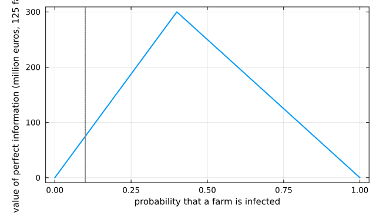
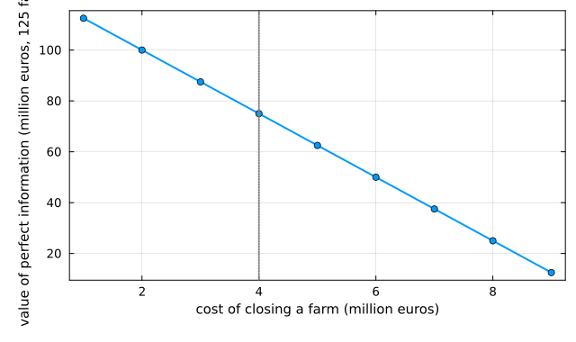

What surveillance is worth: closing mink farms (de Vries et al. 2021)
Simon Frost
- About this case study
- The paper
- The published numbers
- When information is worth most
- An imperfect test
- What was not reproduced
- What to take from this
About this case study
This case study replicates a published analysis: a worked example of the value of perfect information, printed in full in a box of the paper. It is the smallest of the case studies, a table of two actions and two states, and every number of the box is reproduced exactly. The vignette then asks what the paper’s example leaves open: what an imperfect test of a farm would be worth. The comparisons are in the test suite (test/fixtures/replications/devries2021_mink.json, test/test_replications.jl).
The paper
de Vries, Koopmans, Morton and van Baal (2021), “The economics of improving global infectious disease surveillance”, BMJ Global Health 6(9):e006597, doi:10.1136/bmjgh-2021-006597, CC BY-NC 4.0. The input is its Box 2, “Value of information and the closure of mink farms”; only its numbers are used here.
Decision. In 2020 SARS-CoV-2 was found in farmed mink in the Netherlands. For each of about 125 farms: close it, or leave it open.
Actions. Leave the farm open (keep_open, the baseline) or close it for good.
States. The farm is infected or not_infected.
Belief. A probability of 0.1 that a farm is infected.
Outcome. Money: the paper’s figures, in millions of euros. Closing a farm costs 4, from earlier research the paper cites. An infected farm left open costs 10, “a combination of the monetary value of lost life-years after transmission to humans and economic consequences in the industry”. The paper says of this figure and of the 0.1 that they “are hypothetical and generated solely to illustrate the principle of value of information”. Nothing here is valued by this package.
Two cells of the table are used by the box without being printed: an open farm that is not infected costs nothing, and closing costs the same whether or not the farm is infected.
using DecisionAnalysis
include(joinpath("..", "_common.jl"))
using Plots
const FARMS = 125
const CLOSING, INFECTED_OPEN = 4, 10 # millions of euros, from Box 2
const ACTIONS = [:keep_open, :close]
const STATES = [:infected, :not_infected]
# One farm with probability `p` of infection.
function farm(p; closing=CLOSING, infected_open=INFECTED_OPEN)
table = PayoffTable(ACTIONS, STATES, [-infected_open 0; -closing -closing])
return DecisionProblem(table, FiniteBelief(STATES, [p, 1 - p]); baseline=:keep_open)
end
problem = farm(1 // 10)
problem.payoffPayoffTable{Int64}: 2 actions × 2 states
| action | infected | not_infected |
|---|---|---|
keep_open | -10 | 0 |
close | -4 | -4 |
The published numbers
values = aggregate(Expectation(), problem)
md_table(["quantity (millions of euros)", "paper (Box 2)", "this package"],
[["expected value of leaving a farm open", -1, values[1]],
["expected value of closing a farm", -4, values[2]],
["expected loss over 125 farms, deciding now", 125,
-FARMS * act_now_value(problem)],
["expected loss over 125 farms with perfect information", 50,
-FARMS * (act_now_value(problem) + evpi(problem))],
["value of perfect information", 75, FARMS * evpi(problem)]])| quantity (millions of euros) | paper (Box 2) | this package |
|---|---|---|
| expected value of leaving a farm open | -1 | -1 |
| expected value of closing a farm | -4 | -4 |
| expected loss over 125 farms, deciding now | 125 | 125 |
| expected loss over 125 farms with perfect information | 50 | 50 |
| value of perfect information | 75 | 75 |
first_choice(decide(problem, MaxExpectedUtility())),
expected_gain_over_baseline(problem)(:keep_open, Rational{Int64}[0, -3])Without information the farms stay open, and closing them all would lose a further 3 million a farm against that baseline. Knowing which farms are infected is worth 0.6 million a farm, 75 million in all: the paper’s “maximum of €75 million for sequencing and sequence analysis”.
When information is worth most
The paper’s Figure 2 varies the inputs, but it is a picture and the text gives no values, so what follows is this package’s own calculation on the paper’s table.
Perfect information saves, on each farm that would have been decided wrongly, the difference between the two actions. If farms are left open, the mistake is an infected farm, which costs 10 − 4 more than closing it. If farms are closed, the mistake is a clean one, which costs 4.
probabilities = (0:100) .// 100
plot(Float64.(probabilities), [Float64(FARMS * evpi(farm(p))) for p in probabilities];
xlabel="probability that a farm is infected",
ylabel="value of perfect information (million euros, 125 farms)", legend=false)
vline!([0.1]; linestyle=:dot, color=:grey)
peak = argmax(p -> evpi(farm(p)), probabilities)
md_table(["quantity", "value"],
[["probability at which the two actions tie", peak],
["value of perfect information there (million euros, 125 farms)",
FARMS * evpi(farm(peak))],
["value at the paper's probability of 0.1", FARMS * evpi(problem)]])| quantity | value |
|---|---|
| probability at which the two actions tie | 0.4 |
| value of perfect information there (million euros, 125 farms) | 300 |
| value at the paper’s probability of 0.1 | 75 |
The value is largest where the decision is closest, at a probability of 4/10, the cost of closing over the cost of an infected farm. Above it, farms are closed without information, and information is worth what it saves on the clean ones.
closings = 1:9
plot(closings, [Float64(FARMS * evpi(farm(1 // 10; closing=c))) for c in closings];
xlabel="cost of closing a farm (million euros)",
ylabel="value of perfect information (million euros, 125 farms)", legend=false,
marker=:circle)
vline!([CLOSING]; linestyle=:dot, color=:grey)
At the paper’s probability of 0.1, closing would have to cost less than 1 million a farm before farms were closed without information.
An imperfect test
Sequencing and monitoring do not report the state of a farm without error. Suppose a farm can be tested, and the test finds an infected farm with probability se (its sensitivity) and clears a clean one with probability sp (its specificity). The paper gives neither; the ranges below are ours, to show how the value depends on them. No cost of testing is assumed: the value of the test is the most that it would be worth paying for.
testing(se, sp) = Experiment([se 1-sp; 1-se sp]; signals=[:positive, :negative],
states=STATES)
sensitivities = (5:10) .// 10
specificities = [7 // 10, 8 // 10, 5 // 6, 9 // 10, 95 // 100, 1]
md_table(vcat("sensitivity", ["specificity " * string(round(Float64(sp); digits=2))
for sp in specificities]),
[Any[Float64(se),
(Float64(FARMS * evsi(problem, testing(se, sp))) for sp in specificities)...]
for se in sensitivities]; digits=1)| sensitivity | specificity 0.7 | specificity 0.8 | specificity 0.83 | specificity 0.9 | specificity 0.95 | specificity 1.0 |
|---|---|---|---|---|---|---|
| 0.5 | 0 | 0 | 0 | 0 | 15 | 37.5 |
| 0.6 | 0 | 0 | 0 | 0 | 22.5 | 45 |
| 0.7 | 0 | 0 | 0 | 7.5 | 30 | 52.5 |
| 0.8 | 0 | 0 | 0 | 15 | 37.5 | 60 |
| 0.9 | 0 | 0 | 0 | 22.5 | 45 | 67.5 |
| 1 | 0 | 0 | 0 | 30 | 52.5 | 75 |
The entries are millions of euros over 125 farms; the bottom right corner is the paper’s 75 million.
Two things stand out.
- Specificity matters more than sensitivity here. Nine farms in ten are clean, and each false alarm closes a farm for 4 million. A test that never misses an infected farm is worth nothing unless its specificity exceeds 5/6:
[sp => FARMS * evsi(problem, testing(1, sp)) for sp in (8 // 10, 5 // 6, 9 // 10, 1)]4-element Vector{Pair{A, Rational{Int64}} where A}:
4//5 => 0
5//6 => 0
9//10 => 30
1 => 75- A test is worth something only if a positive result would close the farm.
information_can_change_decisionsays whether it would, and agrees with the value being positive:
md_table(["sensitivity", "specificity", "probability infected after a positive",
"close on a positive?", "value (million euros, 125 farms)"],
[Any[Float64(se), Float64(sp),
Float64(se * 1 // 10 / (se * 1 // 10 + (1 - sp) * 9 // 10)),
information_can_change_decision(problem, testing(se, sp)),
Float64(FARMS * evsi(problem, testing(se, sp)))]
for (se, sp) in ((9 // 10, 7 // 10), (9 // 10, 8 // 10), (9 // 10, 9 // 10),
(7 // 10, 95 // 100), (9 // 10, 95 // 100))]; digits=2)| sensitivity | specificity | probability infected after a positive | close on a positive? | value (million euros, 125 farms) |
|---|---|---|---|---|
| 0.9 | 0.7 | 0.25 | - | 0 |
| 0.9 | 0.8 | 0.33 | - | 0 |
| 0.9 | 0.9 | 0.5 | yes | 22.5 |
| 0.7 | 0.95 | 0.61 | yes | 30 |
| 0.9 | 0.95 | 0.67 | yes | 45 |
A positive result closes the farm when it lifts the probability of infection above 4/10, the tie point found above.
What was not reproduced
- The sensitivity analysis of Figure 2, which is a picture without printed values. The curves above are this package’s own.
What to take from this
- The paper’s example is reproduced exactly: leaving farms open is best without information, at an expected loss of 125 million euros, and knowing which farms are infected is worth 75 million.
- That 75 million is an upper limit. An imperfect test is worth less, and at this low prevalence a test with a specificity below 5/6 is worth nothing, however sensitive.
- The figures are the paper’s, and two of them are its authors’ illustrations. The conclusions here are about the arithmetic of the example, not about mink farms.